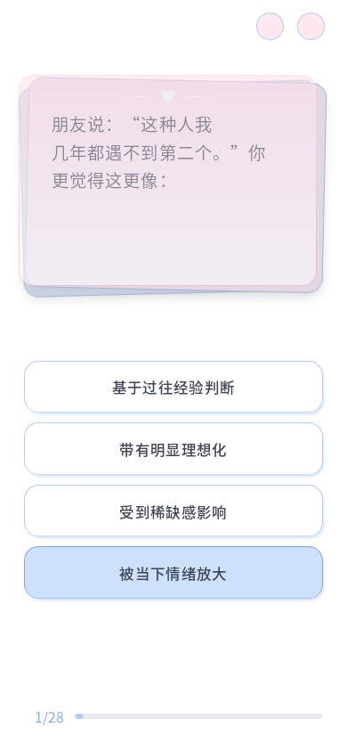
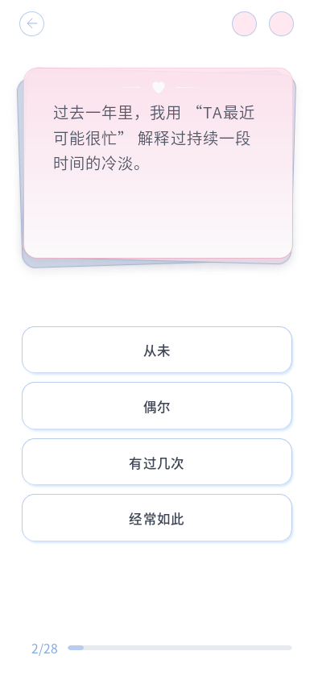
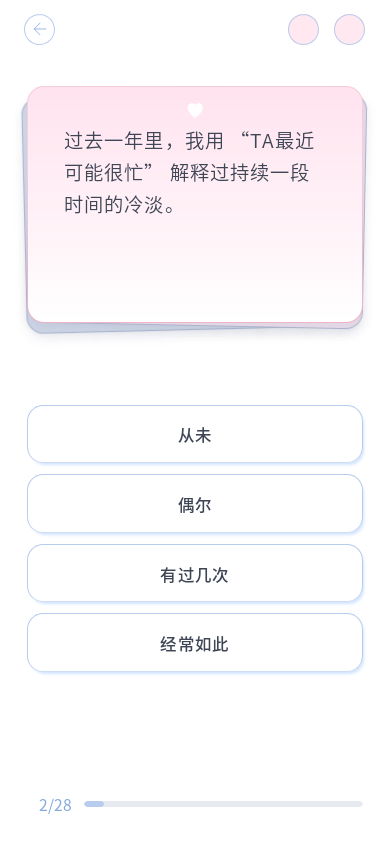

采用短距离共享轴的切换思路：旧前卡向左上抽出并淡出，新题从右下归位，底卡持续可见；上一题从反方向进入。出场 160ms、入场 220ms。使用浏览器原生 Web Animations API，只动画 transform 与 opacity，未添加依赖或克隆题卡。
上方为独立示意预览，使用生产代码中的原生动画函数，不读取或改写答题存储。
常见方案比较：整页滑动有明确方向；共享轴结合短位移和淡入淡出，适合连续步骤；3D 翻转通过透视与正反面制造纸张效果，需要额外管理背面和遮挡。本页面已有叠卡，选用短距离共享轴以保留连续性和文字阅读。
参考：Material 官方运动与过渡 · MDN 动画性能 · 原生动画 API



实际验证：七种横竖屏视口、C10／A28／C24 自然阅读、快速双击、连续导航、不累积动画、重复 resize、减少动态效果、完整 28 题、刷新、关于页往返均通过。相关 Node 测试 2/2，题库及评分未修改。无原生动画 API 时正常即时换题，首次加载与恢复不播放入场动画；实际模拟存储失败后题卡恢复可见且保留原答案。独立预览的正反向播放也已验证。